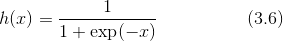
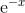
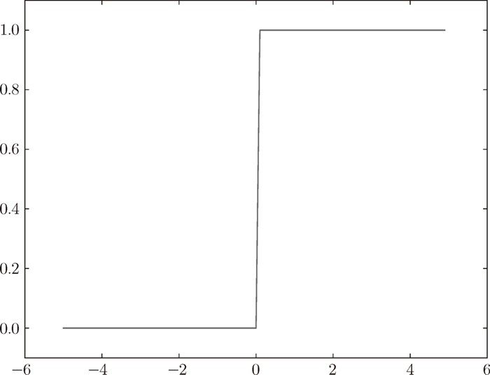
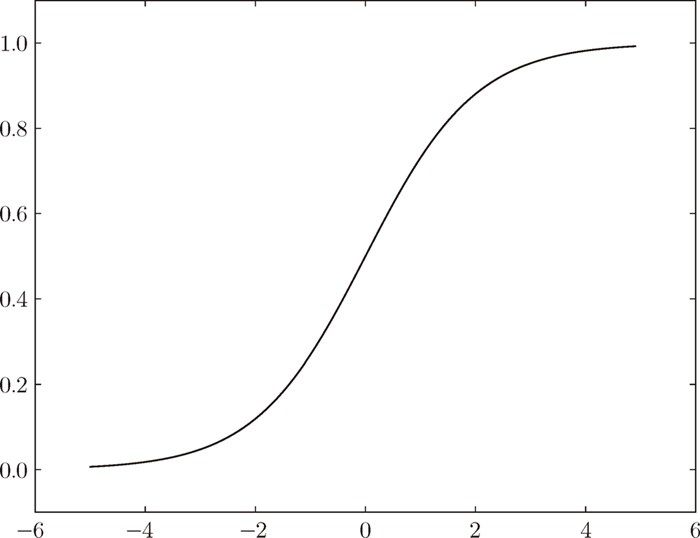
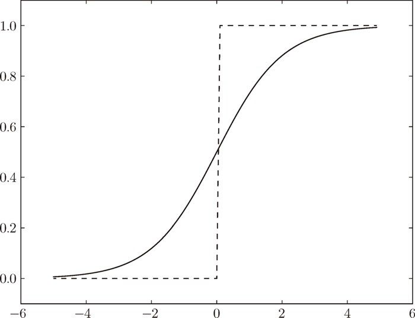
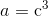
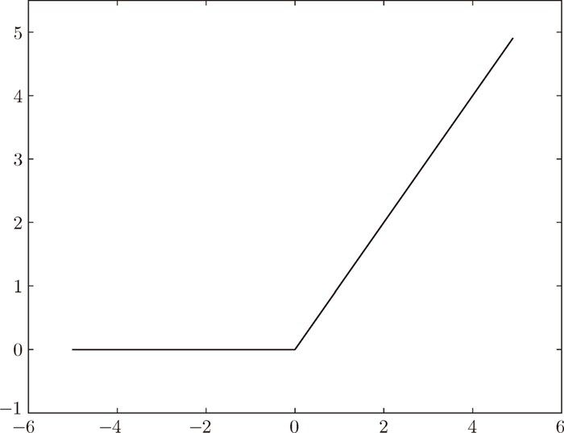
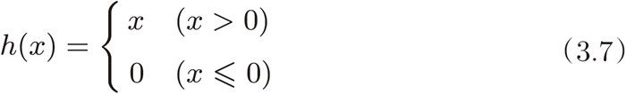

在介绍激活函数时，经常会看到“非线性函数”和“线性函数”等术语。函数本来是输入某个值后会返回一个值的转换器。向这个转换器输入某个值后，输出值是输入值的常数倍的函数称为线性函数（用数学式表示为 h(x) = cx。c 为常数）。因此，线性函数是一条笔直的直线。而非线性函数，顾名思义，指的是不像线性函数那样呈现出一条直线的函数。
在介绍激活函数时，经常会看到“非线性函数”和“线性函数”等术语。函数本来是输入某个值后会返回一个值的转换器。向这个转换器输入某个值后，输出值是输入值的常数倍的函数称为线性函数（用数学式表示为 h(x) = cx。c 为常数）。因此，线性函数是一条笔直的直线。而非线性函数，顾名思义，指的是不像线性函数那样呈现出一条直线的函数。
式（3.3）表示的激活函数以阈值为界，一旦输入超过阈值，就切换输出。这样的函数称为“阶跃函数”。因此，可以说感知机中使用了阶跃函数作为激活函数。也就是说，在激活函数的众多候选函数中，感知机使用了阶跃函数。那么，如果感知机使用其他函数作为激活函数的话会怎么样呢？实际上，如果将激活函数从阶跃函数换成其他函数，就可以进入神经网络的世界了。下面我们就来介绍一下神经网络使用的激活函数。
神经网络中经常使用的一个激活函数就是式（3.6）表示的 sigmoid 函数（sigmoid function）。

式（3.6）中的 exp(-x) 表示  的意思。e 是纳皮尔常数 2.7182 ...。式（3.6）表示的 sigmoid 函数看上去有些复杂，但它也仅仅是个函数而已。而函数就是给定某个输入后，会返回某个输出的转换器。比如，向 sigmoid 函数输入 1.0 或 2.0 后，就会有某个值被输出，类似 h(1.0) = 0.731 ...、h(2.0) = 0.880 ... 这样。
神经网络中用 sigmoid 函数作为激活函数，进行信号的转换，转换后的信号被传送给下一个神经元。实际上，上一章介绍的感知机和接下来要介绍的神经网络的主要区别就在于这个激活函数。其他方面，比如神经元的多层连接的构造、信号的传递方法等，基本上和感知机是一样的。下面，让我们通过和阶跃函数的比较来详细学习作为激活函数的 sigmoid 函数。
这里我们试着用Python 画出阶跃函数的图（从视觉上确认函数的形状对理解函数而言很重要）。阶跃函数如式（3.3）所示，当输入超过 0 时，输出 1，否则输出 0。可以像下面这样简单地实现阶跃函数。
def step_function(x):
if x > 0:
return 1
else:
return 0
这个实现简单、易于理解，但是参数 x 只能接受实数（浮点数）。也就是说，允许形如 step_function(3.0) 的调用，但不允许参数取 NumPy 数组，例如 step_function(np.array([1.0, 2.0]))。为了便于后面的操作，我们把它修改为支持 NumPy 数组的实现。为此，可以考虑下述实现。
def step_function(x):
y = x > 0
return y.astype(np.int)
上述函数的内容只有两行。由于使用了 NumPy 中的“技巧”，可能会有点难理解。下面我们通过 Python 解释器的例子来看一下这里用了什么技巧。下面这个例子中准备了 NumPy 数组 x，并对这个 NumPy 数组进行了不等号运算。
>>> import numpy as np >>> x = np.array([-1.0, 1.0, 2.0]) >>> x array([-1., 1., 2.]) >>> y = x > 0 >>> y array([False, True, True], dtype=bool)
对 NumPy 数组进行不等号运算后，数组的各个元素都会进行不等号运算，生成一个布尔型数组。这里，数组 x 中大于 0 的元素被转换为 True，小于等于 0 的元素被转换为 False，从而生成一个新的数组 y。
数组 y 是一个布尔型数组，但是我们想要的阶跃函数是会输出 int 型的 0 或 1 的函数。因此，需要把数组 y 的元素类型从布尔型转换为 int 型。
>>> y = y.astype(np.int) >>> y array([0, 1, 1])
如上所示，可以用 astype() 方法转换 NumPy 数组的类型。astype() 方法通过参数指定期望的类型，这个例子中是 np.int 型。Python 中将布尔型转换为 int 型后，True 会转换为 1，False 会转换为 0。以上就是阶跃函数的实现中所用到的 NumPy 的“技巧”。
下面我们就用图来表示上面定义的阶跃函数，为此需要使用 matplotlib 库。
import numpy as np
import matplotlib.pylab as plt
def step_function(x):
return np.array(x > 0, dtype=np.int)
x = np.arange(-5.0, 5.0, 0.1)
y = step_function(x)
plt.plot(x, y)
plt.ylim(-0.1, 1.1) # 指定y轴的范围
plt.show()
np.arange(-5.0, 5.0, 0.1) 在 -5.0 到 5.0 的范围内，以 0.1 为单位，生成 NumPy 数组（[-5.0, -4.9,…, 4.9]）。step_function() 以该 NumPy 数组为参数，对数组的各个元素执行阶跃函数运算，并以数组形式返回运算结果。对数组 x、y 进行绘图，结果如图 3-6 所示。

图 3-6 阶跃函数的图形
如图 3-6 所示，阶跃函数以 0 为界，输出从 0 切换为 1（或者从 1 切换为 0）。它的值呈阶梯式变化，所以称为阶跃函数。
下面，我们来实现 sigmoid 函数。用 Python 可以像下面这样写出式（3.6）表示的 sigmoid 函数。
def sigmoid(x):
return 1 / (1 + np.exp(-x))
这里，np.exp(-x) 对应 exp(-x)。这个实现没有什么特别难的地方，但是要注意参数 x 为 NumPy 数组时，结果也能被正确计算。实际上，如果在这个 sigmoid 函数中输入一个 NumPy 数组，则结果如下所示。
>>> x = np.array([-1.0, 1.0, 2.0]) >>> sigmoid(x) array([ 0.26894142, 0.73105858, 0.88079708])
之所以 sigmoid 函数的实现能支持 NumPy 数组，秘密就在于 NumPy 的广播功能（1.5.5 节）。根据 NumPy 的广播功能，如果在标量和 NumPy 数组之间进行运算，则标量会和 NumPy 数组的各个元素进行运算。这里来看一个具体的例子。
>>> t = np.array([1.0, 2.0, 3.0]) >>> 1.0 + t array([ 2., 3., 4.]) >>> 1.0 / t array([ 1. , 0.5 , 0.33333333])
在这个例子中，标量（例子中是 1.0）和 NumPy 数组之间进行了数值运算（+、/ 等）。结果，标量和 NumPy 数组的各个元素进行了运算，运算结果以 NumPy 数组的形式被输出。刚才的 sigmoid 函数的实现也是如此，因为 np.exp(-x) 会生成 NumPy 数组，所以 1 / (1 + np.exp(-x)) 的运算将会在 NumPy 数组的各个元素间进行。
下面我们把 sigmoid 函数画在图上。画图的代码和刚才的阶跃函数的代码几乎是一样的，唯一不同的地方是把输出 y 的函数换成了 sigmoid 函数。
x = np.arange(-5.0, 5.0, 0.1) y = sigmoid(x) plt.plot(x, y) plt.ylim(-0.1, 1.1) # 指定y轴的范围 plt.show()
运行上面的代码，可以得到图 3-7。

图 3-7 sigmoid 函数的图形
现在我们来比较一下 sigmoid 函数和阶跃函数，如图 3-8 所示。两者的不同点在哪里呢？又有哪些共同点呢？我们通过观察图 3-8 来思考一下。

图 3-8 阶跃函数与 sigmoid 函数（虚线是阶跃函数）
观察图 3-8，首先注意到的是“平滑性”的不同。sigmoid 函数是一条平滑的曲线，输出随着输入发生连续性的变化。而阶跃函数以 0 为界，输出发生急剧性的变化。sigmoid 函数的平滑性对神经网络的学习具有重要意义。
另一个不同点是，相对于阶跃函数只能返回 0 或 1，sigmoid 函数可以返回 0.731 ...、0.880 ... 等实数（这一点和刚才的平滑性有关）。也就是说，感知机中神经元之间流动的是 0 或 1 的二元信号，而神经网络中流动的是连续的实数值信号。
如果把这两个函数与水联系起来，则阶跃函数可以比作“竹筒敲石”2，sigmoid 函数可以比作“水车”。阶跃函数就像竹筒敲石一样，只做是否传送水（0 或 1）两个动作，而 sigmoid 函数就像水车一样，根据流过来的水量相应地调整传送出去的水量。
2竹筒敲石是日本的一种庭院设施。支点架起竹筒，一端下方置石，另一端切口上翘。在切口上滴水，水积多后该端下垂，水流出，另一端翘起，之后又因重力而落下，击石发出响声。——译者注
接着说一下阶跃函数和 sigmoid 函数的共同性质。阶跃函数和 sigmoid 函数虽然在平滑性上有差异，但是如果从宏观视角看图 3-8，可以发现它们具有相似的形状。实际上，两者的结构均是“输入小时，输出接近 0（为 0）；随着输入增大，输出向 1 靠近（变成 1）”。也就是说，当输入信号为重要信息时，阶跃函数和 sigmoid 函数都会输出较大的值；当输入信号为不重要的信息时，两者都输出较小的值。还有一个共同点是，不管输入信号有多小，或者有多大，输出信号的值都在 0 到 1 之间。
阶跃函数和 sigmoid 函数还有其他共同点，就是两者均为非线性函数。sigmoid 函数是一条曲线，阶跃函数是一条像阶梯一样的折线，两者都属于非线性的函数。
神经网络的激活函数必须使用非线性函数。换句话说，激活函数不能使用线性函数。为什么不能使用线性函数呢？因为使用线性函数的话，加深神经网络的层数就没有意义了。
线性函数的问题在于，不管如何加深层数，总是存在与之等效的“无隐藏层的神经网络”。为了具体地（稍微直观地）理解这一点，我们来思考下面这个简单的例子。这里我们考虑把线性函数 h(x) = cx 作为激活函数，把 y(x) = h(h(h(x))) 的运算对应 3 层神经网络 3。这个运算会进行 y(x) = c × c × c × x 的乘法运算，但是同样的处理可以由 y(x) = ax（注意，）这一次乘法运算（即没有隐藏层的神经网络）来表示。如本例所示，使用线性函数时，无法发挥多层网络带来的优势。因此，为了发挥叠加层所带来的优势，激活函数必须使用非线性函数。
3该对应只是一个近似，实际的神经网络运算比这个例子要复杂，但不影响后面的结论成立。 ——译者注
到目前为止，我们介绍了作为激活函数的阶跃函数和 sigmoid 函数。在神经网络发展的历史上，sigmoid 函数很早就开始被使用了，而最近则主要使用 ReLU（Rectified Linear Unit）函数。
ReLU 函数在输入大于 0 时，直接输出该值；在输入小于等于 0 时，输出 0（图 3-9）。

图 3-9 ReLU 函数
ReLU 函数可以表示为下面的式 (3.7)。

如图 3-9 和式（3.7）所示，ReLU 函数是一个非常简单的函数。因此，ReLU 函数的实现也很简单，可以写成如下形式。
def relu(x):
return np.maximum(0, x)
这里使用了 NumPy 的 maximum 函数。maximum 函数会从输入的数值中选择较大的那个值进行输出。
本章剩余部分的内容仍将使用 sigmoid 函数作为激活函数，但在本书的后半部分，则将主要使用 ReLU 函数。